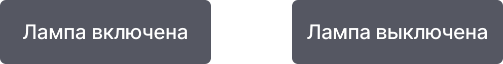
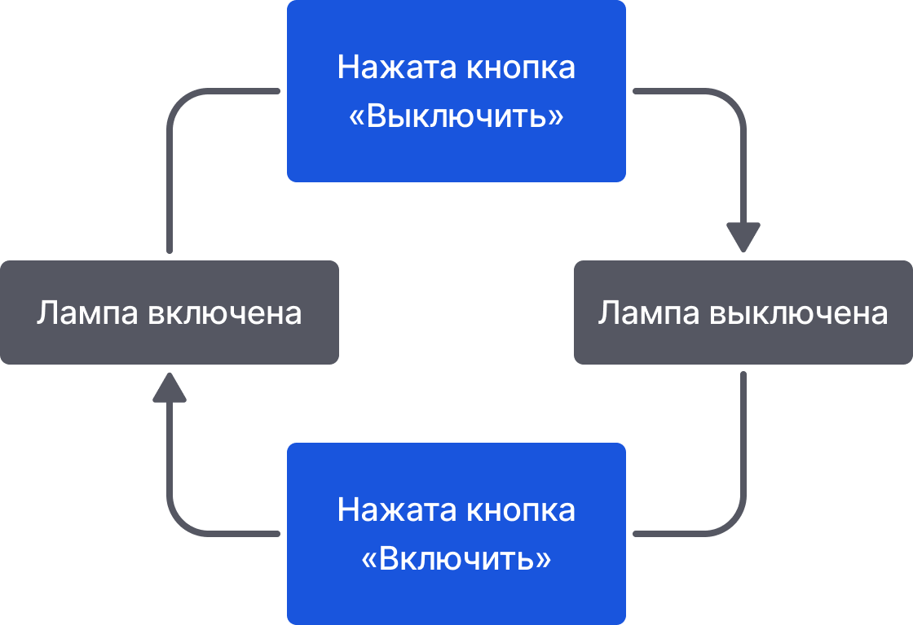

Алгоритм – это конечный набор шагов. Но бывают случаи, когда алгоритм не подходит. И здесь на помощь приходит машина состояний. Это схема, которая описывает, что и в какой последовательности делает исполнитель в зависимости от того, что с ним происходит. В отличие от алгоритма, здесь вместо шагов и ветвлений состояния и переходы между ними.
Cостояние – как подсказывает само слово, это положение, в котором сейчас находится исполнитель. Например, у лампы существует 2 состояния: «Лампа включена» и «Лампа выключена». Лампа всегда, либо включена, либо выключена. Лампа не может быть включена и выключена одновременно. Есть только эти два состояния, строго ограниченное, конечное число состояний.
Если есть состояния – должны быть и переходы между ними. На схеме они показываются стрелкой, указывающей переход от одного состояния к другому.
Но переход обычно происходит не сам по себе, а имеет причину, некоторый импульс, сигнал. Такой сигнал, побуждающий к изменению состояния, называют событием. Его пишут на стрелке соответствующего перехода.
Так мы можем обозначить, что для включения лампы нужно нажать кнопку «Включить», а для выключения – «Выключить».
Переходы и события детерминированы. Это означает, что каждый переход и событие всегда указывают на одно и то же следующее состояние и всегда приводят к одному и тому же результату из заданного начального состояния при каждом запуске процесса.
Одно из преимуществ машин состояний над алгоритмами – при описании процесса в таком виде мы можем учесть все возможные его состояния и их взаимосвязи. Это позволяет более точно и надёжно охватить поведение исполнителя. А главное – это наглядно, и позволяет легче вносить исправления.